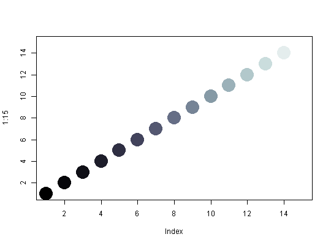

bathyDeepPal(x, palette = FALSE, alpha = 1)
TRUE return a list with matching colours and valuesDeep bathymetry colours.
Colour ramp suitable for deep waters (-5500) to sea level. The palette functions operate in 3 modes: 1) n colours - Pal(6) - returns 6 colours from the palette 2) data - Pal(c(10, 50, 100)) - return colours for 3 ice concentrations 3) palette - Pal(palette = TRUE) - return the full palette and breaks Derived from maps created in Matlab by Emmanuel Laurenceau.
